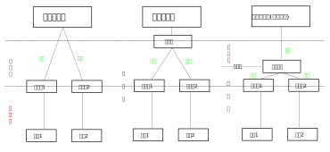

本文是我对跨平台开发的一些原理上的探究. 跨平台开发, 是一直以来许多开发者的目标, 一套代码直接运行在不同的平台是一件多么方便的事情! 当然我水平有限, 理解还是比较粗浅, 一定有错误的地方, 在阅读时一方面要谨慎, 避免被误导, 另一方面发现错误的话还请批评指正, 非常感谢!
计算机之间有硬件和操作系统的不同
就硬件而言, 主要差异就是cpu的差异. 现如今(2020年)cpu主要有amd64和arm架构, 一种是复杂指令集, 一种是精简指令集. amd64架构的cpu功耗大, 性能强, 主要用于电脑端, 搭载Windows和MacOS/Linux/BSD操作系统. arm架构的cpu功耗相对较小, 性能也相对较弱, 主要用于手机, 搭载Android/iOS操作系统. 此外, arm架构的产品越来越多, 比如树莓派是可以搭载Windows的(当然树莓派本来是搭载Linux的); Apple最近也开发了基于arm架构cpu的M1芯片, 在其上也搭载了MacOS. Linux一众发行版也有很多arm版本操作系统. 可以说, 在当前的时间点, arm架构上可以搭载所有主流操作系统.
就操作系统而言, 现如今(2020年)主要分为两大类, 即Windows和Unix&Unix-like, 后者包含MacOS/iOS/Android/Linux/BSD等. 由于有一些电脑越做越小, 反之平板越做越大, 很多电脑也配备了触摸屏, 反之很多办公事宜都可以在手机上处理, –其实电脑端操作系统和移动端操作系统之间的鸿沟在减小, 它们在互相学习. 然而现如今, 电脑和移动端操作系统还是有明显差异的, 电脑端更适合办公, 以及使用专业性较强和需要高性能的软件, 移动端更适合即时通讯, 资讯类阅读, 简单事件处理等软件. 所以跨平台一般来说分为两种, 一种是跨Windows/MacOS/Linux/BSD, 一种是跨Android/iOS, 当然也有两者兼备且特别成功的, 比如–浏览器.
浏览器
其实我认为现如今最成功的跨平台技术当属浏览器, 一套代码就可以在不同的平台运行, 而不同操作系统之间的差异全部被掩盖在浏览器庞大又复杂的代码之下. 浏览器的原理我之前小小分析过, 见, 主要是渲染引擎和JS解释器这两个核心部件, 通过浏览器的其他”接口类”模块(比如网络模块, 用户界面后端模块等), 再通过操作系统, 接收或调用不同硬件的过程. 我们写前端代码(原生HTML+CSS+JavaScript或Vue或React), 只需要让渲染引擎和JS解释器看懂就行, 不用关注浏览器怎么抹平不同操作系统的差异, 也不用关注不同操作系统怎么抹平不同cpu不同设备的差异.
然而浏览器是有一些弊端的, 我认为主要在3个方面：
- 没有沉浸式体验
- 没有足够的调用硬件的权限
- 性能不够好
问题1主要是指浏览器在使用时带有边框, 且没有很好的离线缓存控制和消息推送机制, 也没有操作系统风格的UI, 这样会让使用者有一种”临时性使用”的感觉, 而没有沉浸式的体验. 这种弊端尤其体现在移动端.
问题2是指前端代码总是需要通过浏览器来获取硬件资源, 而出于各种考虑和限制, 浏览器能给前端的资源不够充足, 前端是没有较大的调用系统资源权限的.
问题3主要是指JavaScript是一种解释型语言, 每次运行都需要解释一遍, 不如编译型语言开发的软件运行有效率. 虽然有诸如JIT机制的引入, 也不能从根本上解决这个问题.
以上3个问题都有分别的解决方法. 专门针对问题1, 有PWA, 小程序等; 专门针对问题2, 有nodejs; 专门针对问题3, 有WebAssembly.
针对前端技术领域的跨平台技术
针对前端技术领域的跨平台技术, 按说是应该针对以上3点问题都有解决方案的, 目前来说, 主流的技术有Electron, React Native, Weex和Cordova这几个.
Electron
Electron跨的是Windows/MacOS/Linux操作系统. Electron整合了nodejs端和浏览器端. 相对于浏览器, Electron的主进程有更大的权限, JavaScript解释器可以直接操作系统资源, 进行存储, 网络, 消息推送等操作. Electron也允许开发者自定义外壳, 增强用户沉浸感体验. 所以Electron解决了1和2的问题.
Electron并没有针对问题3的解决方案, 由Electron打包出来的应用和浏览器中的网页没有本质上的性能差异.
React Native
React Native跨的是Android/iOS操作系统. Electron不再采用浏览器的架构, 取消了浏览器渲染引擎, 仅保留JavaScript解释器, 通过Bridge来和系统原生的api进行对接. 这一思路和Electron是有不同的, Electron是保留了浏览器渲染引擎, 通过浏览器渲染引擎来调用操作系统的图形接口, 而React Native取消了浏览器渲染引擎, 使用系统原生渲染方法来页面. 这样一来, 页面的显示更加原生, 原生的渲染速度和渲染效果会比使用浏览器浏览器渲染引擎要好一些; 同时JavaScript也获得了更大的硬件权限. React Native基本解决了问题1和2.
React Native在问题3上没有本质上的改观, 因为App还是在运行时JavaScript解释运行.
对比React Native和Electron, 对于前端的浏览器架构这种”制度”, 可谓一个是改革派, 一个是改良派. React Native直接投奔原生语言, 天然带有”沉浸”, “获得系统资源”优点, 不走浏览器线. Electron保留了浏览器机制, 结合nodejs技术, 也可以获得”沉浸”, “获得系统资源”等特点.
Weex了解不多, 我把它理解成使用Vue的React Native. 而Cordova, 我把它理解为移动平台的Electron, 但是它给渲染端的JavaScript增加了一些访问系统资源的api(Electron是通过对接nodejs来实现的), 而如果您想自定义系统功能的话, 需要使用该平台的开发语言.
至于使用这些技术开发时的代码能不能部署到Web端, 首先要确保软件不能有访问系统资源(如读写文件)的功能, 不能调用Api, 也就是说软件是个静态展示类页面. 在这个前提下, Electron, Cordova和Weex的前端部分代码基本可以在Web端重用, 而React Native的写法和React有些差别, 不太好重用在Web端.
另一方面, 当前的前端向跨平台技术并没有解决解释型语言的性能问题. 如果想要”提高性能”, 思路都是一样的：找到接近底层但又和操作系统平台无关的一个Level. 未来如果WebAssembly或类似的技术可以成熟地应用, 那这一问题其实也就一定程度上解决了.
| 技术 | 跨的平台 | JavaScript解释器 | 渲染引擎 | 与系统交互方式 | 页面开发技术 |
|---|---|---|---|---|---|
| Electron | Windows/ MacOS/ Linux | V8 | Blink | 通过Web Api和系统层级的nodejs交互 | 任意前端技术 |
| Cordova | iOS/ Android | JavaScriptCore(iOS)/ V8(Android) | Webkit(iOS)/ Blink(Android)/自定义 | 通过特定的Api和系统层级的Native Code(Java, Swift)交互 | 任意前端技术 |
| React Native | iOS/ Android | JavaScriptCore | 移动平台原生引擎 | 通过特定的Api和系统层级的Native Code(Java, Swift)交互 | React |
| Weex | iOS/ Android | JavaScriptCore(iOS)/ V8(Android) | 移动平台原生引擎 | 通过特定的Api和系统层级的Native Code(Java, Swift)交互 | Vue |
跨平台与性能之间冲突的折中办法
我们知道, 高级编程语言有编译型和解释型两个基本类型, 前者以C/C++为代表, 后者以python, JavaScript为代表. 编译型语言会将代码转换成平台特定的机器码来执行, 所以速度快, 但是如果想要跨平台, 就需要分别编译(如Qt), 或者干脆分别编写; 解释型语言会边解释边运行, 好处是是可以跨平台, 但是这样反复把高级语言解释成机器码的过程导致性能偏低.
解释型语言执行效率低, 其原因在于每次都有解释过程. 由于平台不同, 所以不能事先解释. 那还有一个策略就是运行时优化, 把总是反复解释的代码片段记录下来, 下次用到的时候直接执行它的机器码, 省去解释过程, 这就是JIT技术. 在浏览器中, JIT技术碰到一个问题, 就是JavaScript的变量是无类型的, 导致上次的机器码可能不能重用, 而只能再次解释. 所以一个思路是把JavaScript改造成强类型语言, 这就是TypeScript.
和JIT技术不同, 另一种思路是, 我们为什么不直接把预先编译好的字节码放到浏览器里执行? 这里的根本问题在于, 需要跨客观存在的不同硬件平台, 并且使程序高性能运行. 解释型语言跨平台能力强, 然而解释高级语言是需要成本的; 编译型语言开发程序性能较好, 但是需要多次编译成机器码才能适应多个平台. 在高级语言和机器码的两极上, 我们需要找到一个平衡点. 这个点要尽量接近底层的机器码, 以减少解释过程的时间, 尽量解决性能问题; 同时它还要统筹好不同平台的差异, 向上承载的语言必须是基本和平台无关的. 开发时使用高级语言(开发者喜欢的语言, 开发生态好的语言, 适合项目开发的语言)开发, 在解释运行环境下开发(实时调试), 部署时转换成这个中间代码, 提高程序运行性能.
WebAssembly就是按照这个思路来设计的, 我不去管弱类型的JavaScript, 而用C++这样的强类型语言开发, 通过编译器编译成wasm字节码, 在程序运行的时候wasm字节码会被解释成机器码, 并引入JIT机制进一步改善性能.
Web的成功和它的跨平台属性关系密切, 如果再解决其性能较原生应用偏低的问题, 那Web技术会再一次大放异彩, 更加擅长编写复杂软件. 抛开Web领域, JVM的设计也是遵循这个思路的, 即Java等高级语言编译成class虚拟机器码, 再由JIT虚拟机解释class虚拟机器码. 可以看到, 综合利用编译和解释的优点, 是在不同平台下保持便捷开发和程序高效运行的有效方法.

其他跨平台技术
以上只是针对由前端技术领域(HTML+CSS+JavaScript)制作图形界面软件的跨平台技术, 此外, 使用其他语言, 开发软件(图形&命令行)的主流跨平台技术, 主要有以下这些.
首先是C/C++(以下统称C++). 如果仅使用C标准库, 由于这个库在Windows/MacOS/Linux上都有, 所以这样的C++代码在不同平台上分别编译后形成的命令行可执行文件, 都是能运行的. 而如果需要调用系统Api, 那么需要一个工具, 把使用系统Api的方式统一起来, 比如说–Qt. Qt就是一个把操作系统的不同Api抹平的开发套件, 一般来说用来开发Windows/MacOS/Linux跨平台图形应用. Qt开发应用仍然需要分别编译.
Dart语言的Flutter技术, 我感觉和Qt在机理上是差不多的, 但是它是跨iOS/Android/Web平台的. Dart是编译型语言, 但是应用于Web平台时是把Dart翻译成JavaScript, 以解释型语言运行的.
再来看一下Java, Java是解释型语言, 当然更确切的说法是Java是(混合编译的)解释型语言, class字节码是Java语言的中间代码, 运行于JVM上. 和Qt不同, JVM在不同操作系统上向上暴露的接口是基本相同的, 而Java转换成的class字节码在运行时还是需要根据平台的不同而解释运行的.
Python也是一种(混合编译的)解释型语言, 和Java的思路是一样的, Python转换成的字节码主要有两种, 一种运行在PVM上, 一种可以运行在JVM上.
nodejs上运行的JavaScript并没有字节码的概念, 是(纯)解释型语言, 不过为了提高性能, 也是需要像WebAssembly这样的中间代码机制引入的.